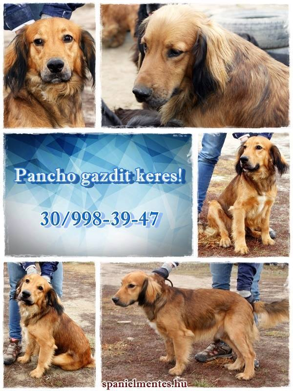

AZ ÖRÖKBEFOGADÁS MENETE
Hogyan fogadhatsz örökbe kutyát a Spánielmentéstől?
Támogassa a Cocker Rocker Spániel Fajtamentő Egyesületet – Adjunk új esélyt a spánieleknek!
Hogyan fogadhatsz örökbe kutyát a Spánielmentéstől?

Név: Pancho
Nem: Kan
Született: 2015.01.01.
Bekerült: 2018.04.10.
Virtuális örökbefogadás: Jelenleg nincs virtuális támogatója
Támogatni szeretném!
Pancho 2015-ös születésű örökmozgó titán.
Megjárta párszor a gyepmesteri telepet, mivel többen is felelőtlenül vették magukhoz.
Nem Pancho hibája ugyanis, hogy tele van energiával, így aztán mindig tettre kész, mindenhol jelen van és persze a véleményét se rejti véka alá.
Eddig nem találta meg a tökéletes gazdát, aki képes mindezt a megfelelő mederbe terelni és persze mellette élvezni a túláradó szeretetét.
Ha szereted a kimerítő túrákat, az agyat lefárasztó kutyaiskolát és persze értékelni tudsz egy fizikai csodát, azaz a perpetuum mobile-t, akkor mi szolgálunk ehhez egy társsal.
Várjuk hívásodat, amikor épp szusszansz egyet a 30/99 83 947-es telefonszámon.